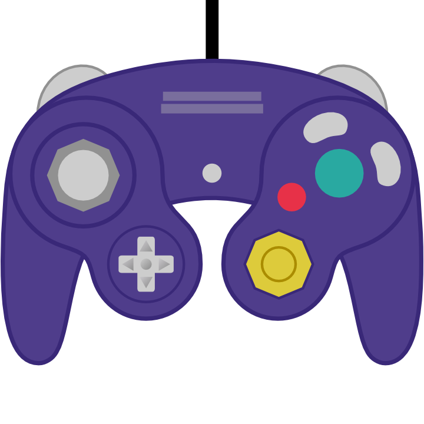

Footstool Jump
A footstool jump takes place when jumping near the head of the opponent.
To do that you simply have to press the jump button near the opponent's head. The longer you press the button, the higher the jump you get.  The spacing for this tech is quite strict, so watch your double jump when trying to go for a footstool jump. There are two types of footstools: the regular one and the phantom footstool.
|
|
|